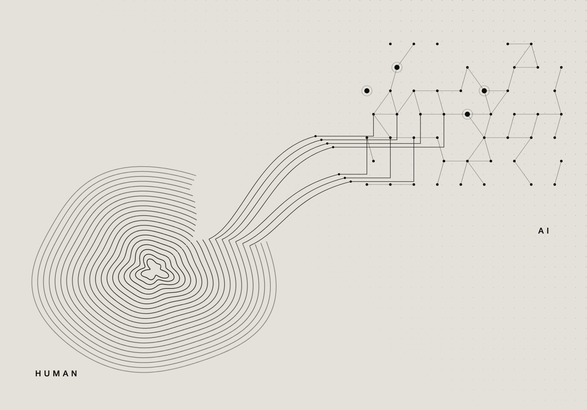
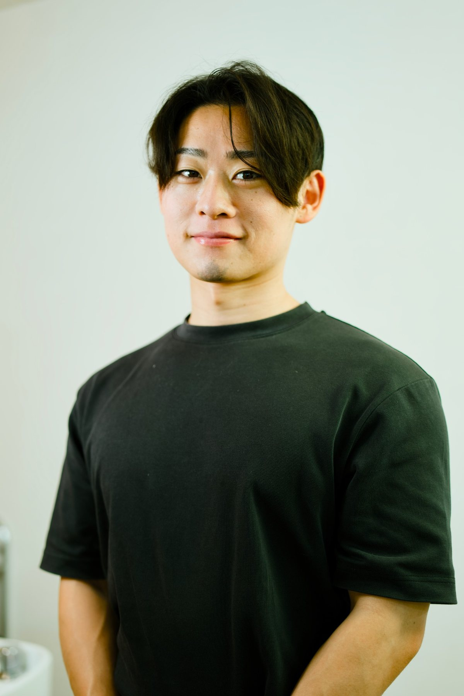

お店の裏方の仕事を、
まとめてAIに。
領収書の整理、月末の稼働報告、口コミへの返信、シフトの予約システムへの入力。どれも接客の合間に、店長やスタッフが手で続けてきた作業です。
領収書の写真を読み取って報告メールの下書きをつくる。過去の返信を手本に、担当スタイリストの口調で口コミの返信案を出す。スプレッドシートのシフトを、そのまま予約システムへ反映する。ばらばらだった裏方の仕事を、ひとつの流れにまとめました。送信や投稿の前には、必ず人が目を通します。

AI導入支援 / 業務効率化 / HP制作・LINE構築
柳沢恵瑠 Meguru Yanagisawa
About
消防士、訪問販売、Webマーケティング、コーチング。遠回りに見えるかもしれません。でも振り返ると、やってきたことはずっと同じでした。目の前の人の「困った」を、動ける形にすること。

はじめまして、柳沢恵瑠（やなぎさわ めぐる）です。
いまは、会社やお店にAIを入れるお手伝いと、毎日の仕事を軽くする仕組みづくり、それからホームページの制作とLINEの構築、公開後の運用までをしています。
AIのことを話す人は増えました。けれど、実際の現場では「で、うちは何からやればいいの」で止まっていることが多い。ツールを並べる前に、その仕事をしている人の話を聞く。そこから始めるようにしています。

道具より先に、 人の話を聞く。
Works
これまでに関わった仕事の一部です。どれも「毎月のあの作業、なんとかならないかな」という一言から始まりました。
領収書の整理、月末の稼働報告、口コミへの返信、シフトの予約システムへの入力。どれも接客の合間に、店長やスタッフが手で続けてきた作業です。
領収書の写真を読み取って報告メールの下書きをつくる。過去の返信を手本に、担当スタイリストの口調で口コミの返信案を出す。スプレッドシートのシフトを、そのまま予約システムへ反映する。ばらばらだった裏方の仕事を、ひとつの流れにまとめました。送信や投稿の前には、必ず人が目を通します。

お店の雰囲気と、来てほしいお客さまの話を聞くところから始めて、デザイン、修正、公開、ドメインの管理までをひとりで担当しました。公開したあとも、更新と改善を続けています。
Service
何から始めればいいかわからない、という段階から一緒に考えます。まずは業務の話を聞かせてもらって、AIに任せられるところと、人が持っておくべきところを分けるところから。入れたあと、現場で使われ続けるところまで付き合います。
毎日の報告、集計、メールの返信、資料づくり。繰り返している作業を、AIとツールで少しずつ手放していきます。仕組みはブラックボックスにせず、使う人が自分で直せる形で残します。
このサイトも自分でつくりました。最初のヒアリングから、デザインの修正（3回まで）、公開、ドメインの管理まで。途中で誰かに引き継ぐことはなく、最後まで私が見ます。きれいに見えることより、その人らしさが伝わることを大事にしています。
ホームページを見てくれた人と、そのあとどうつながっていくか。LINE公式アカウントの設計から、自動の返信、予約やお知らせの流れまで、HPとひと続きのものとして組み立てます。
つくって終わりにはしません。更新、改善、数字の見方まで。公開してからのほうが、長い付き合いになると思っています。

Contact
相談というほど固まっていなくても大丈夫です。「これ、AIでどうにかならないかな」くらいの話から始まることがほとんどです。
hello@example.com